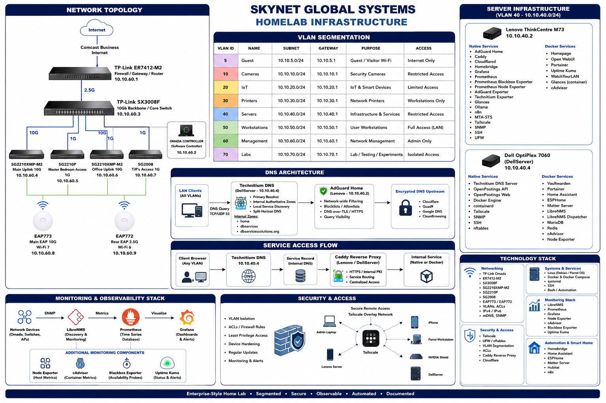
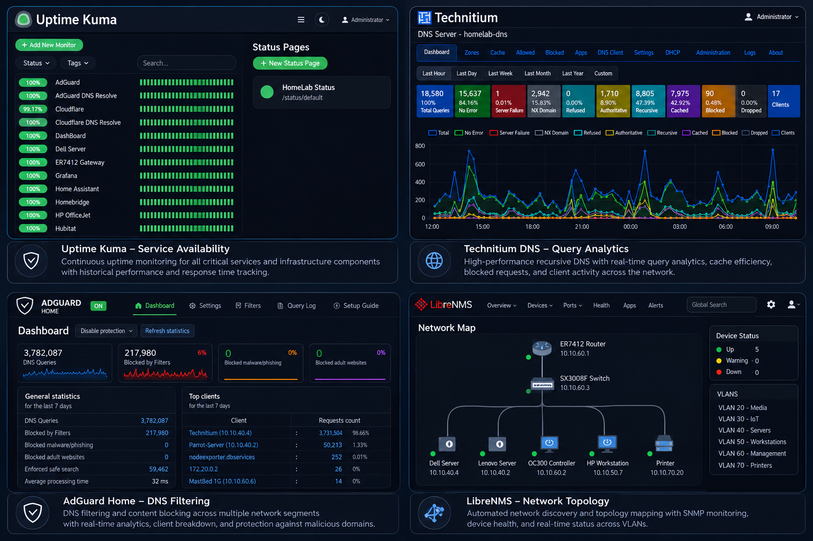

I build, secure, and troubleshoot enterprise-style infrastructure.
I am an IT support and infrastructure professional with hands-on experience administering Linux systems, segmented networks, Docker services, DNS, reverse proxies, monitoring, and security. I operate my homelab as a production-style learning environment where I design architectures, deploy services, document changes, investigate incidents, validate backups, and improve reliability.
- Duluth, Georgia
- Authorized to work in the U.S.
- Open to onsite, hybrid, remote, and field roles
For non-technical reviewers
Translating the homelab into workplace experience
This environment is comparable in scale and operating discipline to supporting a small branch office or small-business network. It includes segmented networks, Linux servers, DNS infrastructure, application hosting, monitoring, backups, secure remote access, troubleshooting, and technical documentation.
| Portfolio evidence | Common employer language |
|---|---|
| TP-Link Omada VLANs, routing, ACLs, and mDNS | Branch-office networking, network segmentation, access-control administration, and troubleshooting |
| Technitium DNS and AdGuard Home | DNS administration, internal name resolution, secure DNS, filtering, and service discovery |
| Uptime Kuma, Prometheus, Grafana, and LibreNMS | NOC monitoring, infrastructure observability, alerting, availability management, and SNMP monitoring |
| Docker Compose, Portainer, and Linux services | Linux application hosting, container operations, service deployment, and lifecycle management |
| Caddy reverse proxy and internal PKI | Web infrastructure, TLS administration, reverse proxies, and secure application publishing |
| Tailscale and SSH | Secure remote administration, VPN access, endpoint support, and privileged troubleshooting |
| Git, Bash automation, backups, and case studies | Change management, scripting, rollback planning, technical documentation, and incident recovery |
About
Operations discipline applied to infrastructure engineering
I bring nearly 20 years of customer-facing and operations experience from banking, financial services, airline services, and business operations. I now apply that same discipline to IT support and infrastructure engineering — focusing on reliability, observability, and secure designs.
My homelab functions as a production-style learning environment where I design architectures, deploy services, document changes, investigate incidents, validate backups, and improve reliability through iterative testing and post-incident reviews.
Homelab architecture
Segmented, monitored, and securely published
Network
- Comcast Business
- TP-Link ER7412 Router
- SX3008F 10 Gb Backbone
- VLANs: Labs (70) Management (60), Workstation (50), Servers (40), Printers (30), IoT and Media (20), Guest (10)
Layered DNS flow
Clients → Technitium DNS → AdGuard Home → Encrypted upstream DNS → Internet
Secure publishing
Internet → Cloudflare → Caddy / Worker → Internal services or static portfolio
Remote administration
Administrator → Tailscale / SSH → Linux hosts → Docker and native services
Hosts
Lenovo ThinkCentre M73
Hybrid Linux host running both native infrastructure services and Docker workloads.
Native:- AdGuard Home, Caddy, Cloudflared, Homebridge, Grafana, Prometheus, Exporters, Ollama, n8n, Tailscale, SSH/UFW
- Homepage, Open WebUI, Portainer, Uptime Kuma, WatchYourLAN, Glances, cAdvisor
Dell OptiPlex 7060
Hybrid Linux host providing primary LAN DNS, monitoring, automation, and security services.
Native:- Technitium DNS, OpenPostings, Tailscale, SNMP, SSH, nftables
- Vaultwarden, LibreNMS stack, Home Assistant, ESPHome, Matter Server, Portainer, cAdvisor, Node Exporter
Case studies
Real infrastructure work, documented end to end
Multi-VLAN network segmentation
Designed an Omada-based network separating management, servers, workstations, IoT, media, printers, and guest traffic.
Measured outcome: Segmented more than 7 VLANs while preserving required DNS, printing, mDNS, automation, and administrative workflows.
Read full case study →Layered DNS architecture
Implemented Technitium DNS as the primary LAN resolver, with AdGuard Home providing filtering and encrypted upstream resolution.
Measured outcome: Centralized resolution for 3 internal DNS zones through a 2-stage resolver chain: Technitium DNS to AdGuard Home and encrypted upstream DNS.
Read full case study →Vaultwarden recovery and hardening
Recovered a missing container, verified persistent data, checked SQLite integrity, recreated the service, and hardened the admin token.
Measured outcome: Restored 1 production-style password-management service, confirmed SQLite integrity with an OK result, and validated readiness with an HTTP 200 response.
Read full incident report →Monitoring and observability
Combined LibreNMS, Prometheus, Grafana, cAdvisor, Node Exporter, Blackbox Exporter, and Uptime Kuma.
Measured outcome: Established visibility across 20+ self-hosted services, 2 Linux servers, and a 7+ VLAN network using host, container, DNS, SNMP, and availability monitoring.
Read case study →Technical capabilities
Networking
TCP/IP · IPv4/IPv6 · DNS · DHCP · VLANs · Inter-VLAN routing · ACLs · NAT · VPN · SSH · SNMP · mDNS
Systems
Linux · Debian · Parrot OS · Windows · macOS · systemd · permissions · storage · logging · remote support
Infrastructure
Docker · Docker Compose · Portainer · Caddy · Technitium DNS · AdGuard Home · Tailscale · Cloudflare · Omada
Monitoring & Security
LibreNMS · Prometheus · Grafana · Uptime Kuma · Wireshark · tcpdump · Splunk · nmap · log analysis
Automation
Bash · Git · curl · dig · openssl · journalctl · Docker inspection · backup and rollback workflows
Certifications
Google Cybersecurity Professional Certificate · CompTIA Network+ (in progress) · Technical Support Fundamentals
Contact
Let's discuss infrastructure, support, or network operations. I'm interested in IT support, network support, NOC, junior systems administration, and infrastructure support opportunities. Send a message via email or connect on LinkedIn.
Denny Brathwaite — Homelab Infrastructure Portfolio
Live site
Designed for deployment to Cloudflare Pages at: portfolio.dbservicessolutions.org
Certifications
About Me
I'm an aspiring Infrastructure and Network Administrator with a passion for designing secure, enterprise-style home lab environments.
Repository
You can view the full source and documentation on GitHub: Bro[...]
From the repository directory, run: Open: http://127.0.0.1:8080 
Layered visibility into service availability, DNS activity,
infrastructure health, and network topology using Uptime Kuma,
Technitium DNS, AdGuard Home, Grafana, and LibreNMS.

Detailed operational views demonstrating dashboard design,
service-availability monitoring, DNS analytics, infrastructure
telemetry, and network discovery across the homelab.
Centralized dashboards provide visibility into host resources,
container performance, service health, and infrastructure trends.
Continuous availability checks, response-time tracking, and
status reporting for critical internal and external services.
DNS query analytics and SNMP-based network visibility provide
complementary insight into application traffic and infrastructure state.
Clients → Technitium DNS → AdGuard Home → AdGuard Private DNS → Internet Internet → Cloudflare → Caddy → Portainer, Homepage, Vaultwarden, Uptime Kuma, Home Assistant, LibreNMS All examples are sanitized. Never publish passwords, API keys, private keys, tokens, session cookies, public IP allocations, or production secrets.
This repository has been sanitized for public release. The following information has been intentionally removed or replaced: public IP addresses, internal network addresses, authentication credentials, API tokens, TLS certificates, private keys, Vaultwarden secrets, Cloudflare credentials, and Tailscale authentication keys.
Portfolio highlights
Repository structure
.
├── index.html
├── styles.css
├── script.js
├── projects/
├── docs/
├── configs/
├── resume/
└── DEPLOYMENT.md
Local preview
python3 -m http.server 8080
Network Architecture
Monitoring & Observability
Monitoring Platform Evidence
Grafana


Uptime Kuma


DNS and Network Monitoring


DNS Flow
Reverse Proxy
Dell Hybrid Architecture
Dell OptiPlex 7060
├── Native Services
│ ├── Technitium DNS
│ ├── Docker Engine
│ ├── containerd
│ ├── OpenPostings API
│ ├── OpenPostings Web
│ ├── Tailscale
│ ├── SNMP
│ ├── SSH
│ ├── nftables
│ ├── lm-sensors
│ └── smartmontools
└── Docker Services
├── Vaultwarden
├── LibreNMS
│ ├── LibreNMS application
│ ├── Dispatcher
│ ├── Redis
│ └── MariaDB
├── Home Assistant
├── Portainer
├── ESPHome
├── Matter Server
├── cAdvisor
└── Node Exporter
Lenovo Hybrid Architecture
Lenovo ThinkCentre M73
├── Native Services
│ ├── AdGuard Home
│ ├── Caddy
│ ├── Cloudflared
│ ├── Docker Engine
│ ├── containerd
│ ├── Homebridge
│ ├── Grafana
│ ├── Prometheus
│ ├── Prometheus Blackbox Exporter
│ ├── Prometheus Node Exporter
│ ├── AdGuard Exporter
│ ├── Technitium Exporter
│ ├── Glances
│ ├── Ollama
│ ├── n8n
│ ├── PM2 Process Manager
│ ├── MTA-STS
│ ├── Tailscale
│ ├── SNMP
│ ├── SSH
│ ├── UFW
│ ├── Chrony
│ ├── smartmonttools
│ ├── lm-sensors
│ └── zram Swap
└── Docker Services
├── Homepage
├── Open WebUI
├── Portainer
├── Uptime Kuma
├── WatchYourLAN
├── Glances
└── cAdvisor
Security